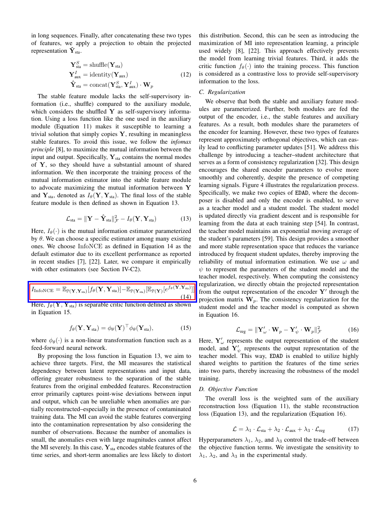

eq_14 — Page 6
Equation Number(s): (14)
Members: 1
Group Crop Contamination: NONE

Group Overlay (blue=group, red=individual)
Members
| # | Formula ID | Order | Eq # | LaTeX | Section |
|---|
| formula_022 | formula_022 | 1 | (14) | I _ {\text {InfoNCE}} = \mathbb {E} _ {\mathbb {P} (\mathbf | Method |
Nearby Text Before:
liary module, which considers the shuffled Y as self-supervisory information. Using a loss function Here, \( I_{\theta}(\cdot) \) is the mutual information estimator parameterized by \( \theta \) . We can choose a specific estimator among many existing ones. We choose InfoNCE as defined in Equati
Nearby Text After:
Here, \( f_{\theta}(\mathbf{Y}, \mathbf{Y}_{\mathrm{sta}}) \) is separable critic function defined as shown in Equation 15.